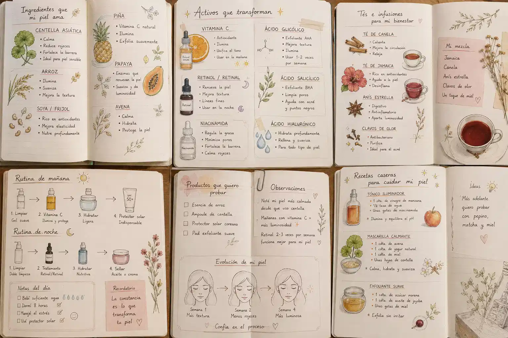

🌿 Learn Your Skin Type
Understanding your skin is the first step to our building a routine that works for you.
Whether you're just starring your skincare journey or trying to understand your skin better, Glow Guide is here to help with simple routines, beginner-friendly tips, and healthy habits.
Explore RoutinesA few years ago, a skier felt overwhelming. They were endless products, complicated ingredients, and too much information online. Glow Guide was created to make skincare feel simpler, friendlier, and easier easier to understand.

Understanding your skin is the first step to our building a routine that works for you.
Discover simple morning and evening routine routines for different skin types.
Learn how to sleep, hydration, and self-care can support healthy-looking skin.
No skin type has been saved yet.